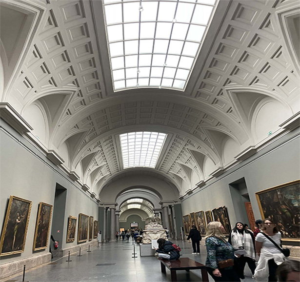
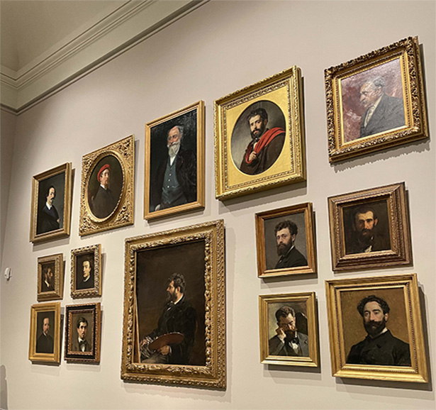
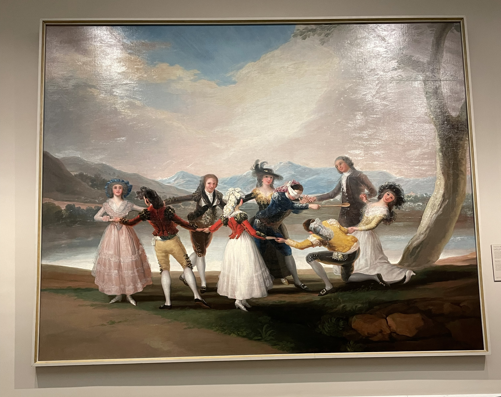
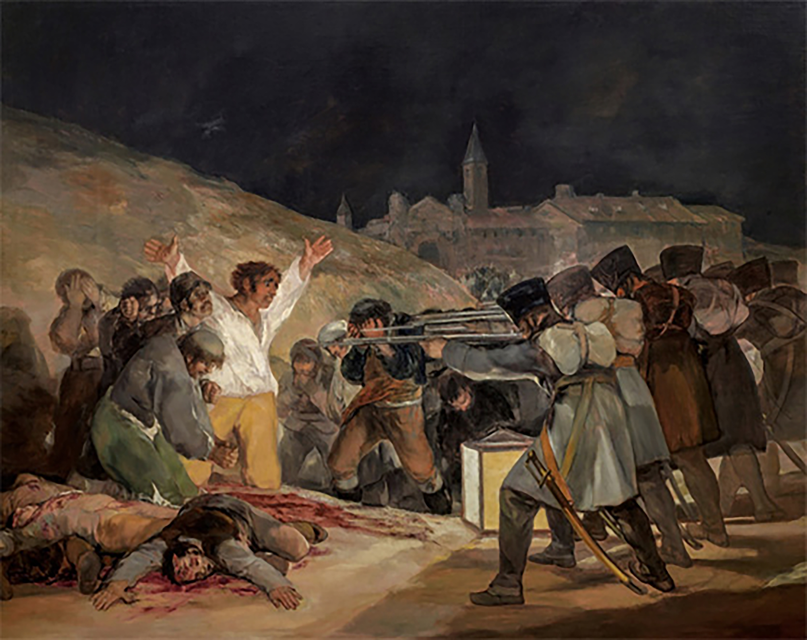
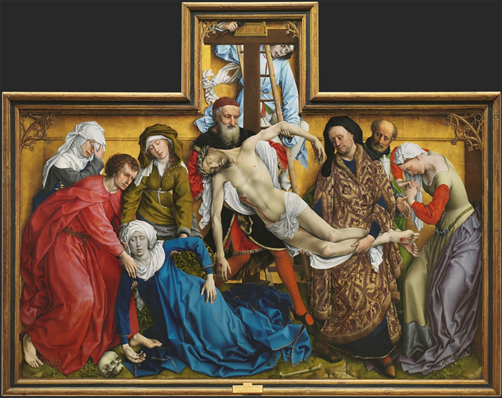
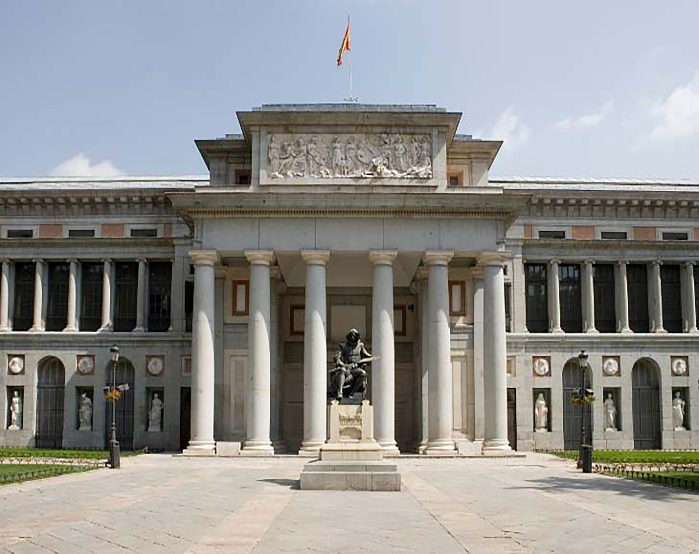
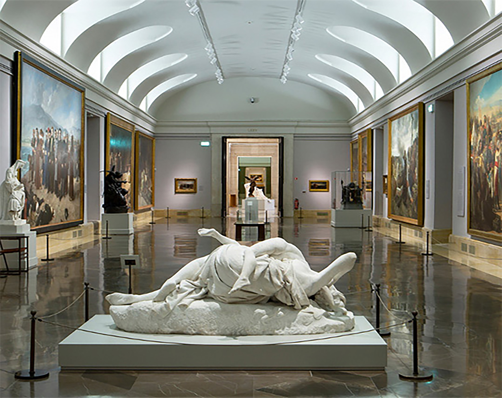

ARTE


MUSEO NACIONAL DEL PRADO
¡Nuestro museo favorito!
El Museo del Prado, diseñado por el arquitecto Juan de Villanueva en 1785, por orden de Carlos III, abrió sus puertas al público en 1819. Sus paredes llenas de historias con artistas famosos como Velázquez, Goya, el Bosco, el Greco, Fra Angelico, Rogier van der y muchísimos más. Con tantos cuadros es mejor que te cojas un mapa antes de entrar, también no se pueden hacer fotos...








